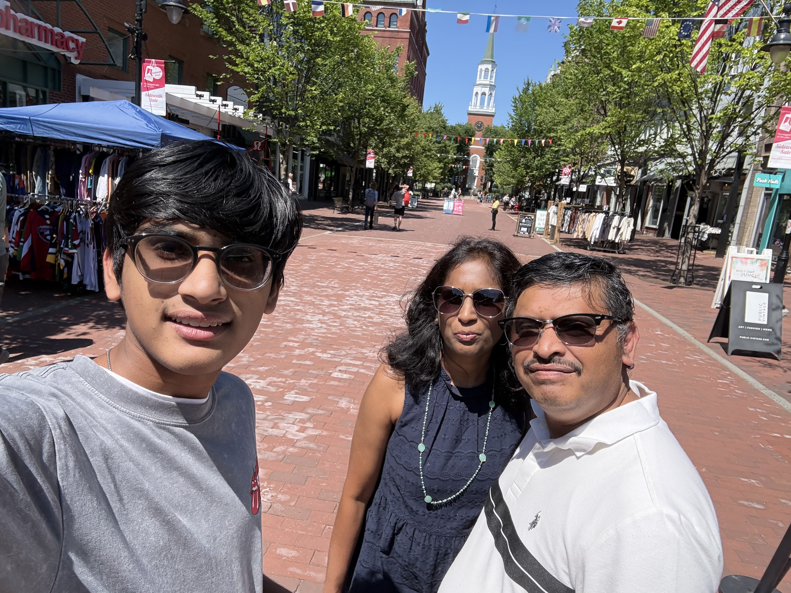
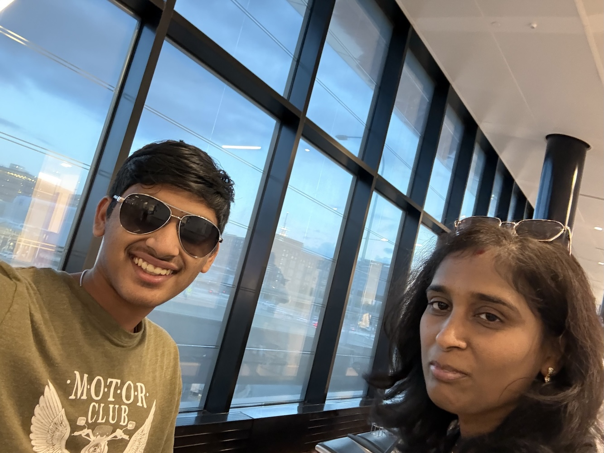

Hello! My name is Kaushik Satheesh Kumar, and if you didn’t already know, I am a current junior at the Massachusetts Academy of Math and Science. I am a former student of Shrewsbury High School, and live with my mom and my dad. I feel that I am best defined by my curiosity and passion for learning. When I come across something I don’t understand, my first instinct is to dig deeper. Whether it’s new technology, an unfamiliar scientific concept, or simply a question that catches my attention, I enjoy exploring it until it makes sense. That curiosity has fundamentally defined my interests over the years.
Since I was young, I have been passionate about engineering, having started out with Legos and FLL Robotics. Then, as my knowledge improved, my passions diversified. I started experimenting with Arduinos and circuitry, writing programs such as a blinker. This culminated in me developing a wearable for the visually impaired using a Raspberry Pi, machine learning, and sensors. Overall, I feel that not only doing something, but the action having a tangible purpose is what motivates me.
Now, I am involved in many extracurriculars. I am a member of the Shrewsbury Speech and Debate Team, where I have participated in Public Forum and Congressional Debate. In these categories, I have to research arguments and defend them against my peers. This was extremely fun and fulfilling, and it sharpened my ability to persuade others and defend my own argumebnts. Additionally, at my sending school, I was part of the FIRST Robotics Team, where I worked on the electrical subteam. This helped me take abstract engineering knowledge and develop it into a tangible output.


